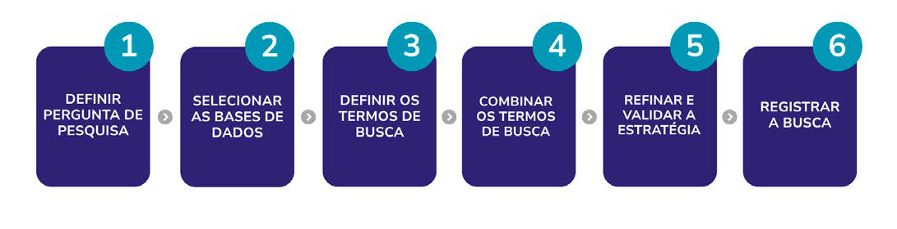
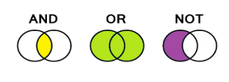

Módulo 2 | Aula 2
Definição da questão de pesquisa, busca por evidências e elaboração de síntese de evidências para políticas
Busca por evidências
Embora pesquisas possam ser feitas de forma rápida e informal, a busca por evidências científicas para sínteses que apoiam a tomada de decisão exige um plano metodológico sistemático, detalhado e reprodutível. Seguindo essa dinâmica, após definir a sua pergunta de pesquisa, a próxima etapa é buscar as evidências que poderão contribuir para responder à questão identificada.
Evidência e fontes de informação
As evidências são um dos principais pilares das Políticas Informadas por Evidências. Agora, vamos aprofundar onde essas evidências podem ser encontradas e quais são as principais fontes de informação utilizadas para identificar conhecimentos relevantes, confiáveis e úteis para a tomada de decisão.
Diferentes tipos de evidências e fontes de informação científica
Como você viu na Aula 1 do Módulo 2, há diferentes tipos de produtos para Políticas Informadas por Evidências que podemos elaborar e utilizar na tomada de decisão. As evidências podem estar disponíveis em diferentes locais, como nas chamadas fontes de informação. Conhecer onde buscar e quais fontes utilizar é uma etapa importante para ampliar o acesso às informações relevantes e reduzir o risco de deixar evidências importantes de fora do processo.
Bases de dados bibliográfico
As bases de dados bibliográficas reúnem artigos científicos, revisões, protocolos e outros documentos produzidos pela comunidade acadêmica. Elas funcionam como grandes repositórios organizados, permitindo localizar registros de diversas temáticas.
A tabela 2 apresenta alguns exemplos de bases de dados e suas principais características.
Tabela 2 – Exemplos de bases de dados.
| Base de dados | Principais características | Link de acesso |
|---|---|---|
| PubMed | Disponibiliza ampla literatura nas áreas de Biomedicina e Ciências da Saúde. | https://pubmed.ncbi.nlm.nih.gov/ |
| Biblioteca Virtual em Saúde (BVS) | Integra diferentes fontes de publicações da área da saúde da América Latina e do Caribe. | https://bvsalud.org/ |
| Lilacs (via BVS) | Diferentes fontes de artigos e documentos da área da saúde da América Latina e do Caribe. | https://lilacs.bvsalud.org/ |
| Cochrane Library | Agrupa um conjunto de revisões sistemáticas em saúde e políticas de saúde. | https://www.cochranelibrary.com/ |
| Embase | Focada em literatura científica biomédica e farmacológica. | https://www.elsevier.com/pt-br/products/embase |
| Scopus | Voltado a publicações científicas nas áreas da Saúde, Ciências Sociais, Ambientais, Engenharia, Tecnologia, Artes e Humanidades. | https://www.scopus.com/sources |
| CINAHL | Abrange, principalmente, tópicos relacionados a enfermagem. | https://about.ebsco.com/pt/produtos/bases-de-dados/cinahl-database |
| PEDro | Agrupa evidências na área da Fisioterapia, Educação Física e Terapia Ocupacional. | https://pedro.org.au/portuguese/ |
| Social Systems Evidence | Repositório de evidências sobre programas, serviços e nas áreas da Saúde e Social. | https://www.socialsystemsevidence.org/ |
| Health Systems Evidence | Banco de dados com sínteses de alta qualidade para apoiar decisões em Saúde Pública. | https://www.healthsystemsevidence.org/ |
Fonte: Elaborada pelas autoras. Informações sobre cada base de dado disponibilizadas nos sites das plataformas (2026).
Literatura cinzenta
Nem sempre as informações necessárias para responder a uma questão de pesquisa estão publicadas em periódicos científicos. Por isso, buscas na literatura cinzenta (teses, dissertações, protocolos, bancos de dados e resumos de congressos) podem ser necessárias e recomendadas na tentativa de identificar evidências.
Tabela 3 – Exemplos de bases da literatura cinzenta.
| Base de dados | Principais características | Link de acesso |
|---|---|---|
| OpenGrey | Acesso aberto à literatura cinzenta europeia. | https://opengrey.eu/ |
| ProQuest Dissertations and Theses Global (PQDT Global) | Agrupa coleções dos mais importantes periódicos acadêmicos do mundo e coleções digitalizadas de grandes bibliotecas. | https://about.proquest.com/en/products-services/pqdtglobal/ |
| Google Scholar | Buscador gratuito de literatura científica e acadêmica. | https://scholar.google.com/ |
| Biblioteca Digital Brasileira de Teses e Dissertações (BDTD) | Reúne teses e dissertações brasileiras em acesso aberto. | https://bdtd.ibict.br/vufind/ |
| The Lens | Integra publicações e patentes para apoiar a inovação. | https://about.lens.org/what/ |
Fonte: Elaborada pelas autoras. Informações sobre cada base de dado disponibilizadas nos sites das plataformas (2026).
Repositórios institucionais e documentos governamentais
Os repositórios institucionais e documentos produzidos por órgãos governamentais são fontes importantes para identificar políticas, diretrizes, relatórios, normas, indicadores e informações relacionadas ao contexto local. Esses materiais ajudam a compreender a realidade dos serviços, as prioridades existentes e as ações já desenvolvidas.
Tabela 4 – Exemplos de repositórios e documentos governamentais.
| Base de dados | Principais características | Link de acesso |
|---|---|---|
| DATASUS | Disponibiliza informações para subsidiar análises da situação de saúde e a tomada de decisão baseada em evidências. | https://datasus.saude.gov.br/ |
| SAGE - Sala de Apoio à Gestão Estratégica | Disponibiliza informações para subsidiar a gestão na tomada de decisão e a geração de conhecimento. | https://novasage.saude.gov.br/ |
| Arca (Repositório Institucional da Fundação Oswaldo Cruz - Fiocruz) | Reúne a produção técnico-científica da instituição. | https://arca.fiocruz.br/home |
| ColecionaSUS - Coleção Nacional das Fontes de Informação do Sistema Único de Saúde | Promove a divulgação da produção institucional da esfera federal dos SUS. | https://bibliosus.saude.gov.br/produto/colecionasus/ |
| BVS Rede de Informação e Conhecimento da SES/SP | Reúne e disponibiliza a produção técnico-científica, legislação e informações em saúde da SES-SP. | https://ses.sp.bvs.br/ |
Fonte: Elaborada pelas autoras. Informações sobre cada base de dado disponibilizadas nos sites das plataformas (2026).
Busca complementar e manual
Mesmo após realizar buscas estruturadas, algumas evidências podem não ser identificadas nas estratégias iniciais ou os autores podem complementar as abordagens metodológicas para ampliar as buscas. Por isso, a busca complementar e manual torna-se uma etapa importante. Ela pode incluir a análise das listas de referências dos estudos selecionados, a busca por autores reconhecidos em alguma temática, documentos relacionados, citações e materiais indicados por especialistas.
Estratégia de busca
A estratégia de busca funciona como um roteiro que orienta onde e como as evidências serão procuradas.
“A estratégia de busca pode ser definida como uma técnica ou conjunto de regras para tornar possível o encontro entre uma pergunta formulada e a informação armazenada em uma base de dados" (Lopes, 2002, p. 61).
Uma boa estratégia de busca tem como principais características ser:
- Abrangente: reduzir vieses, evitando a perda de evidências importantes e o excesso de resultados irrelevantes.
- Sistemática: seguir uma metodologia e garantir transparência nos resultados.
- Reprodutível: qualquer pessoa, seguindo as mesmas etapas, pode chegar nos mesmos resultados.
Na Figura 4 são apresentadas as etapas da estratégia de busca. Nela, você perceberá que alguns tópicos já foram discutidos ao longo desta aula, reforçando que cada etapa está interligada. Assim, a construção de uma boa estratégia de busca depende de um processo previamente bem estruturado, elaborado e validado pelo grupo envolvido.
Figura 4 – Etapas de estratégia de busca.

Fonte: Elaborada pelas autoras (2026).
Receita para elaborar uma estratégia de busca
Nesse momento, é importante identificar os principais elementos da pergunta, selecionar palavras relacionadas ao tema e combinar esses termos de maneira estruturada, conforme as etapas a seguir.
Definição de termos de busca - Os termos de buscas são palavras ou conjuntos de palavras específicas que orientam o encontro de dados, artigos, informações sobre uma determinada temática. A definição desses termos pode se dar das seguintes formas:
- Uso de descritores indexados nas bases de dados, por exemplo os Descritores em Ciências da Saúde, ou DeCS (https://decs.bvsalud.org/), na Biblioteca Virtual da Saúde e o MeSH (https://www.ncbi.nlm.nih.gov/mesh), ou Medical Subject Headings no Pubmed. Os descritores, ou vocabulários controlados, são termos de busca padronizados utilizados para organizar e indexar informações nas bases de dados.
- Palavras-livres e termos sinônimos: Nem todos os temas possuem termos indexados, por isso, além dos descritores, pode-se utilizar palavras-livres e termos sinônimos. Uma forma de encontrar esses termos livres é olhar em artigos que são referências sobre o tema que se quer estudar e ver quais são as palavras-chave que os autores têm utilizado.
Combinação dos termos de buscas - A combinação de termos de buscas tem por objetivo formar uma expressão de busca, que informa às bases de dados como focar em resultados específicos. A forma correta de se combinar os termos de buscas é por meio do uso de operadores booleados.
- Operadores booleanos: são recursos utilizados para ampliar, restringir ou relacionar termos e organizar a estratégia de busca.
Figura 5 – Operadores booleanos.

Fonte: Elaborada pelas autoras (2026).
- AND - É restritivo, combina termos e recupera estudos que contenham todos os termos selecionados. Por exemplo, a estratégia “hipertensão AND gestantes”, vai resultar em uma busca que trará como resultados somente os artigos ou texto que tenham ambos os termos.
- OR - É um operador que amplia a busca ao incluir resultados que contenham pelo menos um dos termos selecionados. Por exemplo, a estratégia “hipertensão OR gestantes”, vai apresentar como resultados artigos que abordem tanto pressão alta como gestantes, não necessariamente em um contexto que apareçam juntos.
- NOT - Exclui termos indesejados, reduzindo resultados que não estejam relacionados ao foco da pesquisa. Por exemplo, na estratégia “hipertensão NOT gestacional”, o comando é que nos resultados eu não encontre estudos que falam sobre hipertensão durante a gestação.
Além dos operadores há outras ferramentas que podem ser utilizadas. Mais sobre o assunto na aula “Como construir uma expressão de busca eficiente?”, da BIREME. (https://docs.bvsalud.org/oer/2018/07/3734/aula-5-estrategia-de-busca.pdf).
Refinamento e validação da estratégia - Às vezes, a busca pode recuperar muitos estudos e, para tornar a seleção mais direcionada, pode-se usar filtros e estratégias de refinamento.
- Filtros metodológicos e refinamento da busca: os filtros podem ser incorporados dentro da estratégia de busca, com adição de informações, por exemplo, sobre o tipo de estudo desejado (“AND (systematicreview[Filter]”), período de publicação, idioma, população ou outros critérios relacionados ao objetivo da pesquisa. A inclusão dos filtros também pode ocorrer diretamente nas próprias plataformas de buscas, que, geralmente, apresentam uma gama de opções que podem ser incluídas para o refinamento das buscas.
Deve-se utilizar os filtros com cuidado. Restrições excessivas podem levar à perda de evidências relevantes. A parceria com bibliotecas pode garantir que as etapas de busca por evidências sejam elaboradas de forma qualificada. Os bibliotecários auxiliam na elaboração, revisão e validação das estratégias de busca.
Nesse momento é importante realizar a validação da estratégia de buscas, ou seja, testá-la nas bases de dados para verificar quais são os estudos recuperados, e analisar os resultados. Nem sempre a primeira estratégia de busca pode ser a mais acertada e podem ser necessários ajustes nos termos, ou nos filtros e até na forma de sua combinação.
- Artigos sentinela - Uma forma de validar a estratégia de busca é recorrer aos “artigos sentinelas”, publicações clássicas e reconhecidas sobre o tema que se busca. Eles podem ser encontrados durante a definição da pergunta de pesquisa, na elaboração do protocolo ou indicados por especialistas. Nesse caso, se você realizar a busca e não recuperar esses artigos, é preciso rever a sua estratégia.
Registro das estratégias - Documentar as bases consultadas, os termos utilizados, os operadores aplicados, filtros e datas de busca permite que a estratégia seja reproduzida e avaliada posteriormente.
- Documentação e reprodutibilidade das estratégias: a documentação adequada contribui para a qualidade metodológica e para o uso responsável das informações encontradas. Você pode fazer isso montando uma planilha.
Convidamos você a assistir aos vídeos disponibilizados pela plataforma Lúmina da Universidade Federal do Rio Grande do Sul (UFRGS). Nos materiais, são apresentadas as principais etapas para a elaboração de estratégias de busca:
A Inteligência Artificial (IA) pode ser ferramenta de apoio na elaboração das estratégias de busca, auxiliando na identificação de descritores, sinônimos, palavras-chave e termos relacionados ao problema elencado, na organização, triagem e refinamento dos resultados.
No entanto, a IA não substitui a avaliação crítica realizada pela equipe de pesquisa. É necessário que você, enquanto ator envolvido, refine e aprimore a questão de pesquisa aos critérios de elegibilidade e às bases de dados selecionadas, garantindo ética, transparência, confiabilidade, reprodutibilidade e qualidade metodológica (Brasil, 2025b). Sobre este conteúdo, convidamos você a assistir ao webinar sobre “Uso de diferentes ferramentas de IA para apoiar a busca em bases de dados” desenvolvido pela Wolters Kluwer, via Sessões Ovid: https://www.youtube.com/watch?v=5TcTyY9fsUc